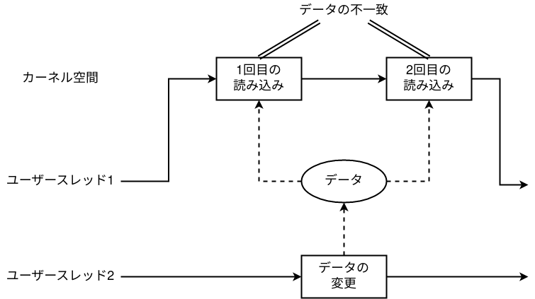
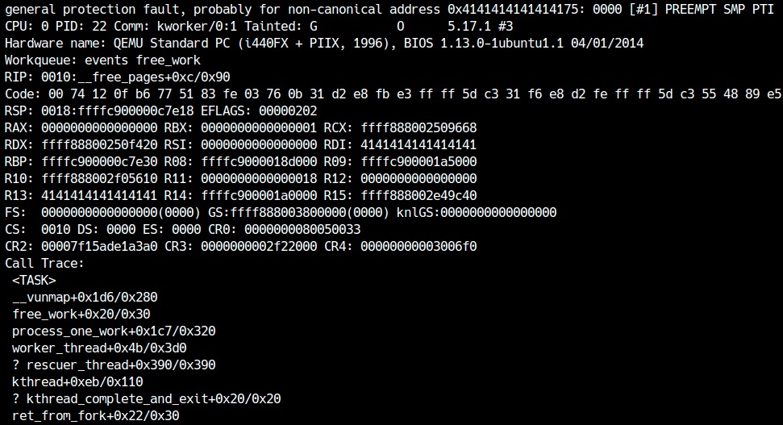
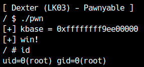

In LK03 (Dexter), we will learn about a vulnerability called double fetch. First, download the LK03 practice files.
QEMU boot options
In LK03, SMEP, KASLR, KPTI are enabled and SMAP is disabled. Also, note that the vulnerability we are dealing with here is a bug related to a race, so please note that it is running on multiple cores.[1]
Although SMAP is simply disabled to facilitate privilege escalation, the vulnerability itself can be triggered even if SMAP is enabled.
1 |
|
Source code analysis
First, read the LK03 source code in src/dexter.c.
This kernel module stores up to 0x20 bytes and can be operated with ioctl, providing data-read and data-write operations.
1 |
|
When the device is opened, kzalloc allocates a 0x20-byte region in private_data. The region is released when the device is closed.
1 | static int module_open(struct inode *inode, struct file *filp) { |
When ioctl is called, verify_request validates the user-supplied data. It checks that the data pointer is non-NULL and that the requested size does not exceed 0x20.
1 | int verify_request(void *reqp) { |
CMD_GET copies data from private_data to user space, while CMD_SET copies data from user space to private_data.
1 | long copy_data_to_user(struct file *filp, void *reqp) { |
Because verify_request checks the size before copying data from user space, there does not appear to be a heap overflow at first glance.
Double Fetch
Double fetch is a type of data race that occurs in kernel space. As the name suggests, it occurs when the kernel fetches (reads) the same data twice.
If kernel space reads the same user-space data twice, another thread can rewrite it between the two reads, as shown below:

The data differs between the first and second fetches, creating an inconsistency. This type of data race is called a double fetch. The major difference from the race condition covered in LK01 is that taking a mutex in the kernel does not resolve this bug.
In this driver, verify_request and copy_data_to_user/copy_data_from_user fetch request data from user space. If you pass a valid size to verify_request and rewrite it to an invalid value before copy_data_to_user or copy_data_from_user executes, a heap overflow can occur.

When handling user space data multiple times, you have to use the data that was copied to the kernel space first.
Ignition of vulnerability
First, let's use it correctly. You can save data to the driver like this:
1 | int set(char *buf, size_t len) { |
Next, let's check the behavior of Double Fetch. First, write some appropriate code and confirm that the vulnerability is triggered. Here I am writing code that tries to compete until the unset data is read.
1 | int fd; |
The main thread calls CMD_GET with the correct size, while a worker thread rewrites the size in user space to an invalid value. If the worker changes the size after verify_request returns but before copy_data_to_user is called, the data is copied using the invalid size and a heap overflow occurs.
For CMD_GET, you can simply check whether data beyond the buffer can be read. How can we check whether the overflow succeeds for CMD_SET? There are several methods; here, we repeatedly attempt an out-of-bounds write and then check for success by reading out of bounds after the loop ends.
1 | void overread(char *buf, size_t len) { |
When I tried to cause a heap overflow with this, in the author's environment, it seems that there was data that should not be destroyed by chance, and a kernel panic occurred as shown below.

seq_operations
The corrupted area is in kmalloc-32, so we need an object in the same size class that can be used for exploitation. In kmalloc-32, the seq_operations structure is convenient.
1 | struct seq_operations { |
seq_operations describes the handlers called in kernel space when user space reads special files such as sysfs, debugfs, or procfs. Therefore, opening a file such as /proc/self/stat allocates one.
Because it contains function pointers, a kernel address can be leaked. For example, calling read invokes the start member of seq_operations, allowing RIP to be controlled.

There are many other structures where kmalloc-32 can be used.
Let's look at an example for more details.
Privilege escalation
Since SMAP is disabled this time, you can Stack Pivot to user space. Please write your own ROP chain and try elevating privileges.

A method for causing contention on a single core will also appear in a later chapter.↩︎